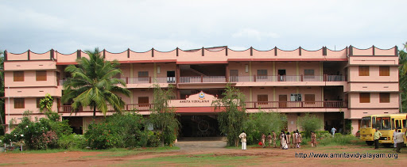
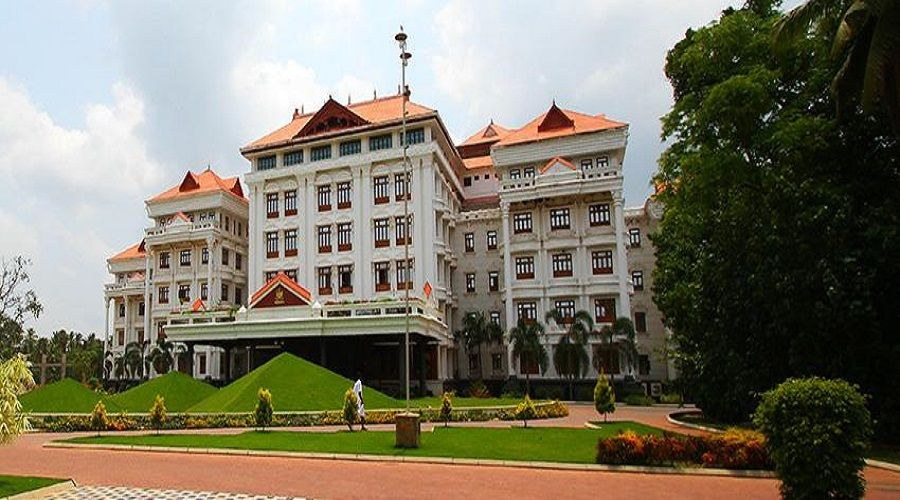

School
AMRITA VIDYALAYAM
Education is an essential part of ones life.Studied at Amrita Vidyalayam
school ,in kakkad which is in the district of kannur.Amrita Vidyalayam is
a school which under Devi Mata Amritanandamayi along with many other
institutions around all over india.Being an amrita students ,acquired lots
of values and knowledge of our ancient india.Completed 12th from Amrita
Vidyalayam kannur.It was a nice experience to be a part of a wonderfull
institution for 14years.
Higher Studies
Amrita School Of Engineering
Amrita Viswa Vidhyapeetham
After 12th wanting to be an engineer joined Amrita school of engineering
at Kollam ,Kerela ,which also work under Mata Amritanandamayi.Being a 1st
year student has a quite good experience and impression at the college.

